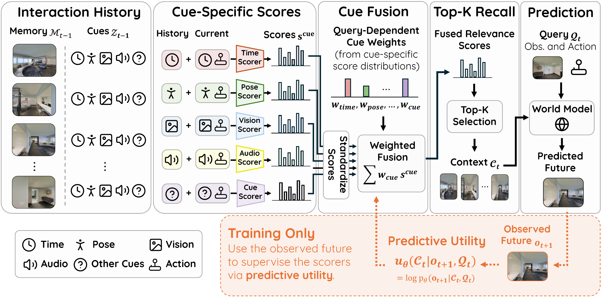

Learning which memories to recall, and which cues to trust, from the future the world model is trained to predict.
Anonymous Institution(s)
Under review
World models predict future observations from current experience and actions, yet long-horizon prediction can depend on observations seen far in the past: scenes and objects persist, and may keep evolving, after leaving the field of view. Episodic memory preserves such experience as individually addressable memories for later recall. But as memory accumulates, only a small fraction of it is useful for any given prediction, and existing world models select from it with fixed rules such as temporal recency, pose overlap, or visual similarity. Similarity under one cue need not reflect predictive usefulness, and the reliability of that cue varies across environments and queries. In an elbow-shaped corridor, a nearby pose-matched memory may lie across a wall and visual appearance is ambiguous along the corridor, while spatial audio can still identify the relevant past experience.
How can a world model learn which past observations are useful for future prediction, and which retrieval cues can identify them before the future is known?
We propose Future-Aware Recall (FAR), a framework that learns episodic recall from future-aware predictive supervision and adaptive multi-cue scoring. During training, FAR measures predictive utility by the conditional log-likelihood of the realized future given recalled context, approximated by negative diffusion prediction loss, and uses it to train a retriever that remains future-blind at inference. The retriever learns cue-specific relevance and automatically determines which available retrieval cues, such as time, pose, vision, and audio, to trust for each query. Across three complementary settings, FAR outperforms hand-designed recall even with the same retrieval cues, automatically adapts which available cues to trust, and recalls the right history as the world changes.
Method

A recalled context is useful when it makes the realized future more likely under the world model. We define the predictive utility of a context as the conditional log-likelihood of the next observation given that context and the current query, and show it lower-bounds the predictive information the context carries about the future.
At inference the future is unknown, but during training it is observed. Bayes' rule combines the retriever's future-blind recall distribution with predictive utility into a future-aware posterior over contexts. The retriever is trained to match this posterior, which transfers credit from the observed future into a recall policy that never needs it at test time.
Each available cue (time, pose, vision, audio, or anything else attached to a memory) yields its own relevance score. Scores are standardized over the memory and fused with query-dependent weights from a learned gate, so FAR can lean on whichever cue is most trustworthy for the current query.
Cacheable retrieval encoders. Vision and audio encoders are contrastively pretrained and frozen, so historical keys are computed once and cached. Only lightweight query-side adapters and the cue-fusion gate remain trainable through FAR.
Diffusion-based predictive utility. Exact likelihoods are expensive for diffusion models, so predictive utility is approximated by the negative diffusion prediction loss of the realized future conditioned on each candidate memory, evaluated with shared noise across candidates.
Temporally structured recall. Memory is partitioned into temporal chunks; the best-scoring observation from each chunk is kept and the K highest-scoring representatives are recalled, avoiding redundant nearby frames.
Training and inference. World-model and retriever updates alternate: recalled contexts train the world model, while periodic utility evaluations over global and local candidate pools provide future-aware targets for the retriever. Inference needs neither the future nor utility evaluation.
Experiments
Three complementary settings, each with a different source of long-horizon uncertainty: LoopNav, a static outdoor Minecraft environment with time, pose, and visual cues; SoundSpaces, realistic indoor scenes with spatialized audio; and AI2-THOR, interactive household scenes whose state changes with the agent's actions.
Every trajectory has an exploration phase, in which the agent observes and, where applicable, interacts with the environment, and a return phase, in which it revisits explored locations. The world model generates the return-phase video using the exploration-phase observations as its memory pool, and we measure frame-wise discrepancy against ground truth.
These are ground-truth episodes from the evaluation sets, not model rollouts. Each shows the exploration phase, which fills the episodic memory, followed by the return phase that the world model is asked to predict. Generated rollouts are shown further below, per dataset.
LoopNav
A static outdoor Minecraft environment with procedurally generated navigation, where retrieval can use time and pose metadata as well as visual observations. We compare against a temporal baseline (most recent observations), WorldMem (field-of-view overlap with the goal), and LongLive-RAG (reconstructive embedding similarity), and evaluate FAR with metadata cues, visual cues, or their adaptive fusion.
Return-phase moments from several evaluation episodes, each labeled with its clip number. Every block shows the ground-truth frame, then for FAR, Temporal, WorldMem, and LongLive-RAG the prediction and the four recalled memories with their time offsets. Red shading marks where a prediction differs from the ground truth. It is an error overlay drawn for visualization, not something the model generated. FAR reaches 20 to 40 seconds back for the frames that matter, while the baselines mostly recall the last few seconds.
Full return-phase rollouts. Press play on a video to watch it; use the controls to scrub or go fullscreen.
SoundSpaces
Realistic indoor navigation augmented with spatialized audio. Two corpora differ in memory density: one performs periodic 360° scans during exploration, the other scans only at the endpoints. Evaluation is stratified by the physical length of the return phase, so longer trajectories require prediction through more rooms, corridors, and viewpoint changes.
Return-phase moments from several evaluation episodes, each labeled with its clip number. Every block shows the ground-truth frame, then for each method the prediction and the recalled memories with their time offsets. Red shading marks where a prediction differs from the ground truth. It is an error overlay drawn for visualization, not something the model generated. Where pose and appearance are ambiguous along a corridor, FAR recalls a memory with a clear line of sight to the goal region.
Full return-phase rollouts. Press play on a video to watch it; use the controls to scrub or go fullscreen.
AI2-THOR
Interactive household scenes where the agent moves objects between surfaces and containers during exploration, so memory holds several observations of the same place in conflicting world states. On return, the model must render the state established by the preceding interactions. A spatially well-matched memory may depict a stale state, which defeats recency- and geometry-based recall.
Return-phase moments from several evaluation episodes, each labeled with its clip number. Every block shows the ground-truth frame, then for each method the prediction and the recalled memories with their time offsets. A badge on each prediction says whether the rendered state matches the world the agent left behind. When the agent returns to a station it has changed, FAR recalls the frames from the interaction itself rather than a pose-matched but stale view.
Full return-phase rollouts. Press play on a video to watch it; use the controls to scrub or go fullscreen.
A controlled two-agent corridor: the observer sees a second, independently patrolling agent only intermittently through a doorway, and must later predict where that agent is when looking down the corridor. Each recalled context is a pair of observations about 1.5 seconds apart so it can carry motion.
FAR learns both which episodic memories are useful for prediction and which retrieval cues to trust. It uses the observed future during training to assign predictive credit while remaining future-blind at inference, and its adaptive cue fusion lets it exploit time, pose, vision, audio, or any other signal attached to a memory. Across navigation, multimodal, and changing-state environments, this consistently improves long-horizon prediction and supports predictive utility as a principled basis for episodic memory access in persistent world models.
Our work focuses on the recall problem and assumes an external episodic memory. How memories are written, compressed, or forgotten, and how interactions among multiple memories are credited beyond our candidate-level approximation, remain open. FAR relies on informative retrieval cues and adds training-time computation for future-aware utility evaluation, though inference is unchanged. Our experiments are in controlled simulation; extending predictive episodic recall to richer real-world settings, together with learned memory formation and persistent-state representations, is a natural next step.